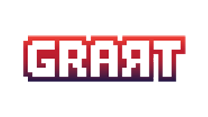
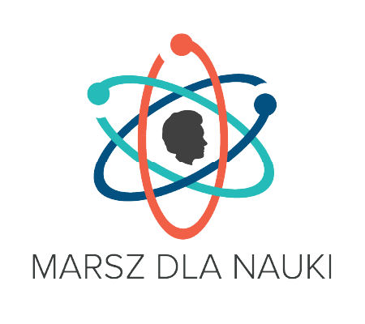

Co to jest Molecules?
Molecules to chemiczna gra edukacyjno-imprezowa o budowaniu związków chemicznych dla 2-4 graczy.
zagraj za darmoMolecules to chemiczna gra edukacyjno-imprezowa o budowaniu związków chemicznych dla 2-4 graczy.
zagraj za darmoGra powstała w trakcie Science Game Jam 2018 (SGJ) organizowanego przez GRART oraz Fundację Marsz dla Nauki. Misją SGJ jest tworzenie i promowanie gier planszowych w interesujący sposób poruszających tematy naukowe. Chcemy łączyć przemyślane mechaniki z wartościowymi tematami z różnych dyscyplin. Mamy nadzieję, że niniejsza gra spełni wasze oczekiwania, dostarczając zarówno rozrywki, jak i wiedzy! W niecałe 12 godzin w Centrum Zarządzania Innowacjami i Transferem Technologii PW udało się zbudować w pełni grywalny prototyp i finalnie uplasowaliśmy się na pozycji 1½ (tuż za zwycięzcą). Potem był czas intensywnego testowania i ulepszania gry, aby finalny prototyp zaprezentować podczas Planszówek na Narodowym.
 
Molecules to chemiczna gra edukacyjno-imprezowa o budowaniu związków chemicznych dla 2-4 graczy. Celem każdego z graczy jest ułożenie jak największej ilości związków chemicznych wybranych na początku rozgrywki. Aby tego dokonać gracz może dokładać, przesuwać i wymieniać pierwiastki, które są na planszy oraz na ręku, a także dzielić bądź łączyć już całe związki niszcząc przy tym plany przeciwników.
Standardowa wersja zawiera wysokiej jakości polimerowe żetony z niezniszczalnym nadrukiem UV.
Aktualnie niedostepneWersja Drewniana – zawiera te same elementy co wersja standardowa, ale wszystkie są drewniane. Istnieje ograniczona liczba takich zestawów.
Aktualnie niedostepneWydany w marcu 2020 pakiet "kwarantanna", zawiera wszystkie elementy w formacie elektronicznym do samodzielnego druku, tak aby zminimalizować kontakt z innymi ludźmi. Ciesz się Molecules bez wychodzenia z domu – wszystko czego potrzebujesz to drukarka i papier!
Czy Molecules jest dostępne poza Polską?
Jeszcze nie. Pracujemy nad wersją angielską i niemiecką
Czy mogę zrobić własną wersję Molecules?
Pewnie! Molecules jest rozpowszechniana na Licencji Creative Commons BY–NC–SA 4.0.
To oznacza, że w swojej wersji musisz wspomnieć o wersji oryginalnej i nie możesz na niej zarabiać
(sprzedawać, wynajmować itp). Twoja wersja musi być rozpowszechniana na tej samej licencji co oryginał.
Pamiętaj, że to na Tobie spoczywa obowiązek sprawdzenia, czy nie naruszasz warunków licencji – w razie
wątpliwości daj nam znać, chętnie pomożemy :)
Znalazłem błąd, co robić?
Koniecznie napisz nam maila.